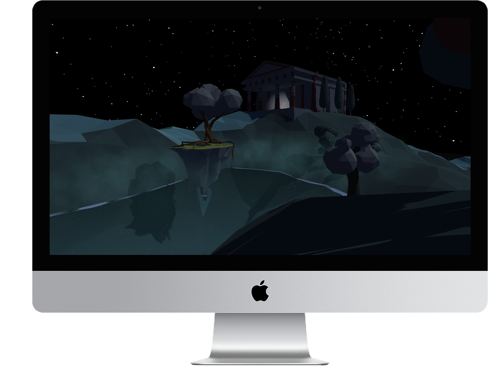

Sorry I am too lazy to optimize for smaller screens :(
Please view the site on desktop
I am a fifth-year PhD student at the Carnegie Mellon University Human-Computer Interaction Institute. I'm advised by Dr. Laura Dabbish. My research interests include social computing as well as privacy and security. My current research explores challenges that mental health professionals face when learning counseling techniques. I have developed a novel training tool to support counselor reflection through real-time annotation and peer feedback.
Pin-Mi: Facilitating Counselor Reflective Learning with a Real-time Annotation Tool
CHI, 2023, Full paper In Press
Auggie: Encouraging Effortful Communication through Handcrafted Digital Experiences
CSCW, 2022, Full paper PDF
Scaffolding the Online Peer-support Experience: Novice Supporters' Strategies and Challenges
CSCW, 2021, Full paper PDF
Hacked Time: Design and Evaluation of a Self-Efficacy Based Cybersecurity Game
DIS, 2020, Full paper PDF
Peer Feedback Processes in the Game Industry
CHI-PLAY, 2019, Full paper PDF
Self-Efficacy-Based Game Design To Encourage Security Behavior Online
CHI, 2019, Extended abstract PDF
When Online Harassment is Perceived to be Justified
ICWSM, 2018, Full paper PDF
Parents' and Children's Preferences about Parents' Sharing about Children on Social Media CHI, 2017, Full paper PDF
Designer
I am also a designer. I trained and worked as a UX designer. Some examples of my previous design work can be found below. Nowadays research is my main focus, and I sometimes do design for fun and aesthetics (like this website).
Mend Mend is a desktop-mobile app that provides daily logs for the patient to record their mood, diary, and a variety of assessment instruments to share with their therapist, so that the therapist can provide a more tailored treatment.
Death and the Maiden A game I made in Unity inspired by Schubert's String Quartet no.14, whose second movement quotes a theme from his lied "Der Tod und das Mädchen". Death and the Maiden is a Renaissance motif prominent in Germanic countries. This game tells the story of a woman's death and her adventure in the underworld.
Google Design Challenge Prompt: While there are many ways to rate and review restaurants, they are not focused on evaluating individual servers. Design an experience where diners can submit positive comments and constructive suggestions for the wait staff, and servers can use this feedback to both improve and help to secure new employment.
TP-Link Kasa Kasa is TP-Link's smart-home control center. The "rules" function I designed will help users automate their daily routines with their smarthome devices.
Mira Mira is a smart mirror that keeps track of your skin condition and provides you with personalized feedback for your skincare.
UI Design This is a collection of UI and graphic designs that I have created for fun and practice.

Musician
I'm an amateur pianist and opera singer. I started studying piano when I was 6. I am still playing daily for fun. My heros are Bach, Beethoven, & Schubert. I'm also a countertenor mainly interested in Baroque operas (Dramma per Musica). For operas I enjoy Vivaldi, Handel, & Porpora. Here's a list of some of my favorite pieces.
- Agitata da due Venti (Griselda); Antonio Vivaldi
- Come Nave in Mezzo all'Onde (Carlo il Calvo); Nicola Porpora
- Symphony no. 9, Op. 125; Ludwig van Beethoven
- String Quartet no. 14, D. 810; Franz Schubert
- Piano Sonata no. 21, D. 960; Franz Schubert
- Trio Sonata in E minor, Bwv. 529; J. S. Bach